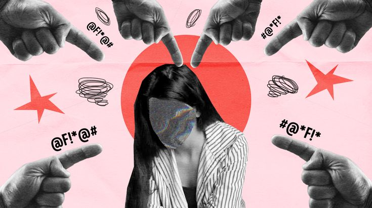

Как справиться с тревогой
Тревога — это естественная реакция организма на стресс, но если она мешает жить, важно уметь её регулировать. Один из простых способов — дыхательные практики. Сделайте глубокий вдох на 4 счёта, задержите дыхание на 2 и медленно выдохните на 6. Повторите несколько раз.
Также полезно говорить о своих чувствах, вести дневник или обращаться за поддержкой к близким. Если тревога становится постоянной — стоит обратиться к психологу или позвонить на горячую линию.